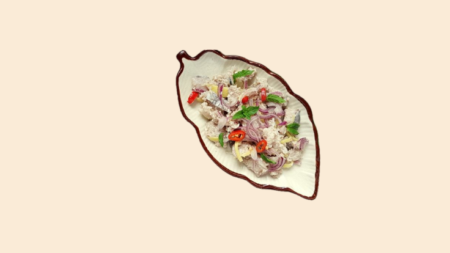

HINAVA
Hinava is a traditional native dish of the Kadazan-Dusun people in the state of Sabah. It is made from fish and mixed with lime juice, bird's eye chili, sliced shallots, and grated ginger. Hinava is a popular dish during celebrations like the Kaamatan Festival but is also enjoyed as a daily delicacy. Its tangy, fresh, and slightly spicy flavor makes it a beloved part of Sabah's culinary heritage.
Learn More
